Using the Desktop App
Introduction
In everyday work, the Desktop App usually remains in the background and is visible as an icon in the system tray (Windows, KDE, GNOME if extra configured), menu bar (macOS), or notification area (Linux). Bringing it to the front is usually only needed to set up or maintain sync connections and configurations. This document describes how to configure and use the Desktop App.
Basic Information and Icons
Before going into configuration and usage topics, some basic information is provided about systray integration, icons used, and more. This will make it easier to use and understand the information displayed by the Desktop App.
The Systray
After the Desktop App has been started, it can not only be fully closed with the Quit symbol on the top right, but also be closed to the system tray to run continuously in the background.
Windows
-
A right-click on the ownCloud systray icon opens a menu for quick access to multiple operations. The images shown are for Windows.
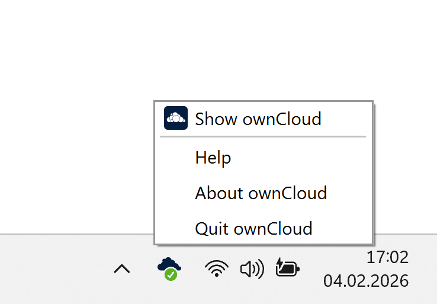
-
A left-click on the ownCloud systray icon opens the Desktop App to the account settings window.
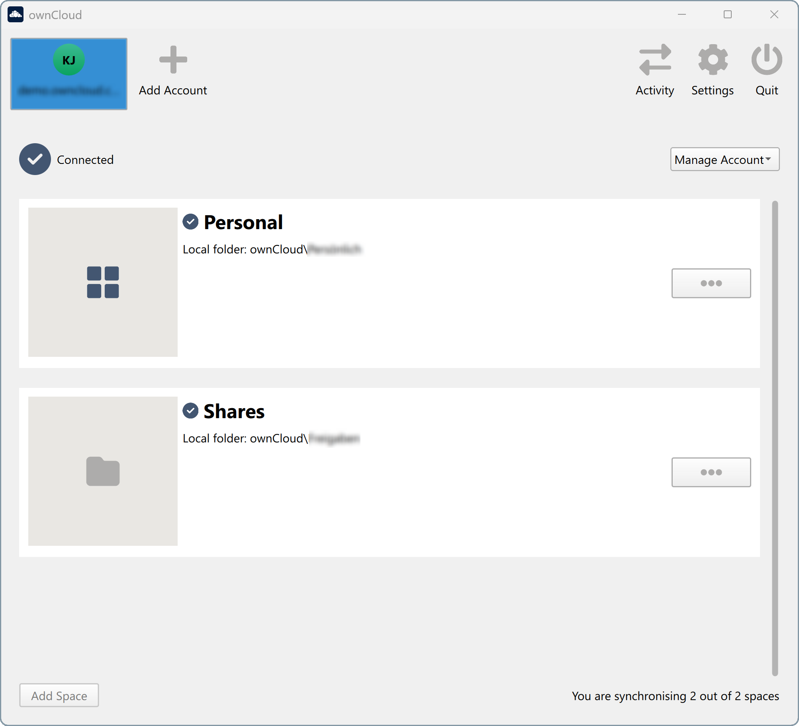
macOS
-
A click on the ownCloud menu bar icon opens the application menu.
-
To show the application window, select Show ownCloud from the menu.
Linux Desktop
-
A left-click or right-click on the ownCloud tray icon opens the application menu.
-
A double-click opens the application window.
Systray Icons
The Desktop App uses the following systray icons. See the table for more information about their meaning.
| Icon | Description |
|---|---|
|
The status indicator uses icons to show the current status of your synchronization. The green circle with the white checkmark indicates that your synchronization is running and you are connected to your ownCloud server. |
|
The blue icon with white semicircles means that synchronization is in progress. |
|
The yellow icon with parallel lines indicates that your synchronization is paused. |
|
The gray icon with three white dots means that your Desktop App has lost its connection to the ownCloud server. |
The white circle with the letter |
|
|
The red circle with the white |
Overlay and Status Icons
Overlay and Status icons indicate the sync status of your ownCloud files in the file manager.
|
File Manager Overlay and Status icons are currently only available for:
|
Overlay icons are similar to the Systray Icons. Their behavior depends on the sync status and errors of files and directories. Unlike status icons, which have their own column named Status, overlay icons are added to each file or folder that is part of the synchronization setup and will not be excluded from syncing.
-
When the Desktop App is not running or offline, no icons are shown to reflect that the folder is currently out of sync and no changes are synced to the server.
-
The icon of a synchronized directory shows the status of the files in the directory. If there are any sync errors, the directory is marked with the error icon.
-
If a directory contains ignored files marked with warning icons, this does not change the status of the parent directory.
-
The overlay icon of an individual file indicates its current sync state.
-
If the file is in sync with the server version, it displays the green checkmark icon.
-
If the file is waiting to sync or is currently syncing, it displays the blue cycling icon.
-
If the file is ignored during sync, for example because it is on your exclude list or because it is a symbolic link, it displays the yellow warning icon.
-
If there is a sync error or the file is blacklisted, it displays the red X icon.
-
Location for Sync Connections
| All sync connections are subject to the same rules described in the limitations section of the Using the Virtual Filesystem documentation. This is important information to read before you start a sync connection. |
Accounts
A sync connection requires an account that specifies the server to connect to, the user, and the user’s credentials for that server. Once an account is created, a user can select, manage, or remove individual sync relationships at any time in the Desktop App. Each possible relationship is provided by the server to which it is connected.
If an account has not been set up as it was on the first start after installation, or if the last account was removed, the Connection Wizard is automatically displayed to add an account when starting the Desktop App.
If an account exists, you can at any time add another account for a different server or a different user with the Add Account 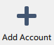
Connection Wizard
The Connection Wizard requires the following information to complete:
-
The URL of the server to connect to.
The URL you are given may be different from the final URL used by the Desktop App or displayed in the browser. This may be the case if a company has a generic setup URL that gives the Desktop App information about where to connect you. This mechanism is called WebFinger and has the great advantage that you only need to know the generic setup URL. The Desktop App tries to determine if WebFinger is available via the given URL and acts accordingly based on the server’s response. This all happens in the background, but is explained here in case you see a different URL being used than the one you entered. -
The user and their credentials.
-
The base location on your local file system to store the data for a sync connection.
If you plan to use multiple accounts, consider using a common base location in the file system for all accounts, which makes them easier to identify via a root folder. This means that you do not take the default suggested path, but customize it to your needs when enabling the Advanced configuration. Consider reading the Using the Virtual Filesystem documentation first to avoid using problematic paths.
Example for a common base folder namedsync`C:\Users\user_name\ownCloud`-> `C:\Users\user_name\sync\ownCloud` `C:\Users\user_name\otherAccount`-> `C:\Users\user_name\sync\otherAccount`
- First, enter the URL of your ownCloud instance
-
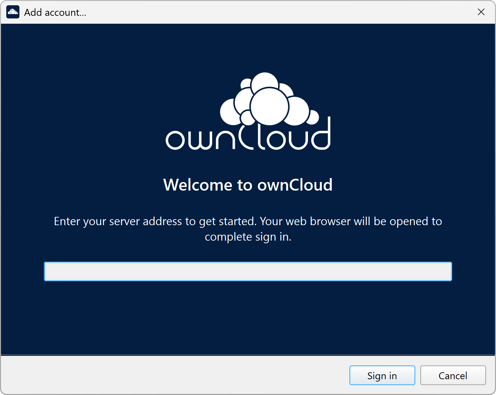
- Enter your ownCloud login on the next screen
-
Note that with modern authentication methods such as Open Authorization (OAuth), you will be redirected to a browser for authentication. Images and authentication methods may vary depending on your corporate setup:
Login with OIDC (Follow the web login process)Please note that the screens displayed in the browser depend on the configuration of the system you connect to.
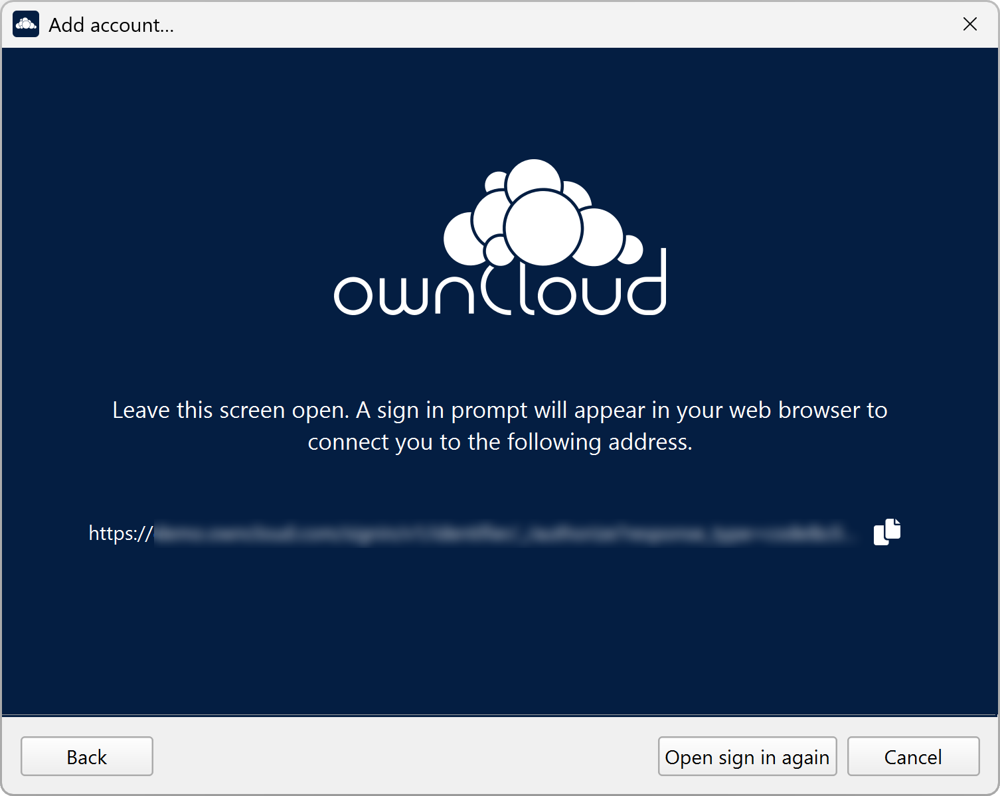
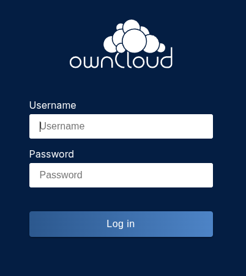
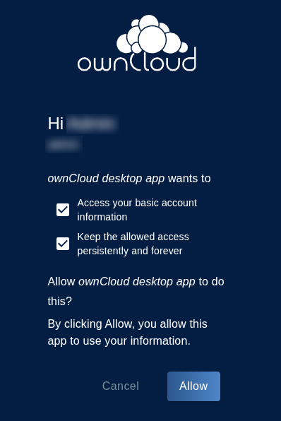
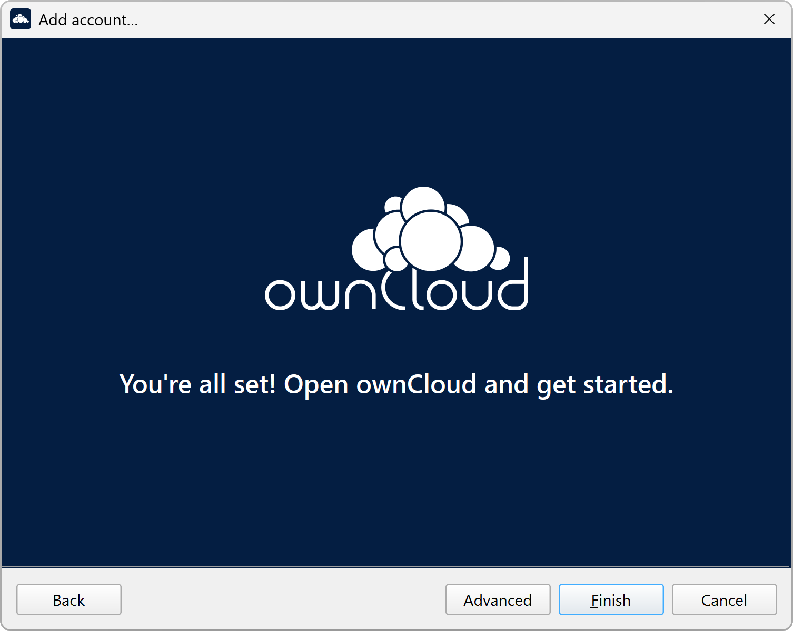
- Advanced Configuration
-
When enabling Advanced configuration, you can refine your synchronization configuration if desired. Here you can specify the synchronization method, such as using the Virtual Filesystem if available on your operating system, what data you want to synchronize, or the location for the synchronized data.
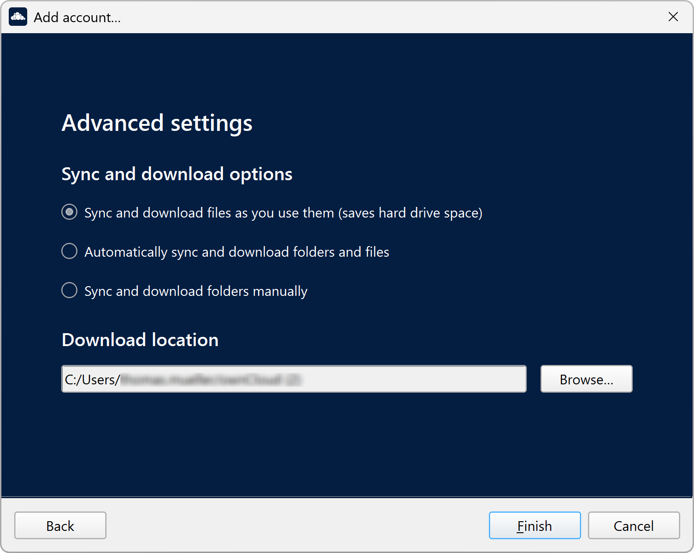
- Final step
-
When you are satisfied with the configuration you have made, click the Finish button at the bottom right. The Desktop App will attempt to connect to your ownCloud server.
Manage Accounts
You can add or remove existing accounts from the Desktop App. The following sections describe how to do this.
-
With the Manage Account menu you can:
-
Log out
Allows you to log out of an account for security reasons without removing the sync connection or data. Note that each sync connection for an account has the ability to pause and resume sync individually without logging out. -
Log in
Logs in after logging out to resume sync for all connections of this account. -
Reconnect
Synchronization occurs periodically, connecting to the server every few minutes. You may lose your connection if you unplug your network cable or switch to a different wireless network. In this case, a manual force reconnect button is available if you want to immediately restart sync for an account rather than wait for an automatic reconnect. This button is only available when the Desktop App is in reconnect state. -
Show in web browser
Allows you to open the browser instead of the File Explorer to view all the data of the connected account. -
Remove
Lets you remove an account. See the Removing an Account section below for details.
-
Add New Accounts
To add accounts to your Desktop App, click on the Add Account button on the top bar and follow the Connection Wizard. The added account will appear as a new item in the main window at the top.
Remove an Account
To remove an account, select the account you want to remove in the top bar and click the to remove it. Note that the account will be removed but no synchronized data deleted. Synchronized data needs to be removed manually. A good rule of thumb is to open the sync location with File Explorer before removing the account, which will make it easier to remove the data later.
Sync Relationships
After you create an account, you can add new sync relationships, manage existing ones, or remove selected ones.
For each action described, first select the account whose sync relationships you want to edit.
| If a sync relationship has been established and you uncheck Allow desktop sync, the existing sync connection will not be affected. If the sync relationship is removed and you try to reestablish the relationship, the now unchecked folder will not appear in the list of available folders. |
Add Sync Relationships
It is easy to add more sync relationships if required. Note that the steps to complete adding a sync relationship vary depending on the operating system you are using. The screenshots show the steps when using Windows.
-
Click Add Folder to open available folders that can be added.
-
Select the folder to add.
-
Define the path for the sync relationship data.
Manage Sync Relationships
To manage a sync relationship, click on the Three Dots button to open the menu as shown in the screenshot. Note that the list varies depending on the operating system you are using. The screenshots shows the list when using Windows.
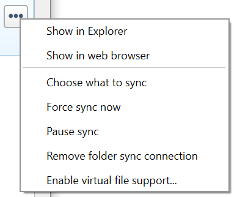
-
With the Three Dots menu you can:
-
Enable virtual file support / Disable virtual file support
Enable or disable virtual file support for this sync relationship, if supported by the operating system.
-
Remove Sync Relationships
As part of the Manage Sync Relationships as described above, you can remove a folder from any synchronization activity. Note that the folder will be removed but no synchronized data deleted. Synchronized data needs to be removed manually. A good rule of thumb is to open the sync location with File Explorer before removing the account, which will make it easier to remove the data later.
Note that if you create a new sync connection for the previously removed folder, the Desktop App will not use the existing folder, but will create a new one.
Spaces
Spaces in Infinite Scale are similar to folders:
-
On initial account setup, all available spaces are auto-selected for the synchronization process.
-
There are at minimum two spaces added, which are the personal space and the space that contains all received shares. Shares are shown as folders in the local filesystem.
-
-
Post initial account setup, new spaces can be added via Managing Resources to Synchronize.
-
When a space is renamed in the Web UI, it also gets renamed in the sync window view, but the local folder name where it is stored does not change.
-
Spaces can be customized with images in the Web UI. The image selected is also shown in the Desktop app.
-
When a space gets disabled or deleted via the Web UI, no data is deleted locally.
-
If you have used ownCloud Infinite Scale with a Desktop app version older then 3.0, you must remove the account from the Desktop app and do an initial account setup again to work with spaces.
Managing Resources to Synchronize
When an account gets added the first time, you can select which remote resources you want to synchronize. This includes the syncronization type which defaults to VFS if available on your operating system (OS) or selective sync where you manually select the resoures to be synchronized otherwise. These resources are represented by the Desktop app as local folders using the base path defined during account setup.
If VFS is available for your OS but selective sync has been chosen, you can at any time switch to VFS and vice versa. Note to check the available disk space before switching from VFS to selective sync (Disable Virtual File support).
The base path defined on first sync is not the only path that can be used. Resources can have their individual base path. This is can be beneficial if you want selected resources to be located on different paths than the default.
Using an Account:
When an account connects to Infinite Scale, the list of currently synced spaces looks like the image below. It also shows the state of the synchronization process:
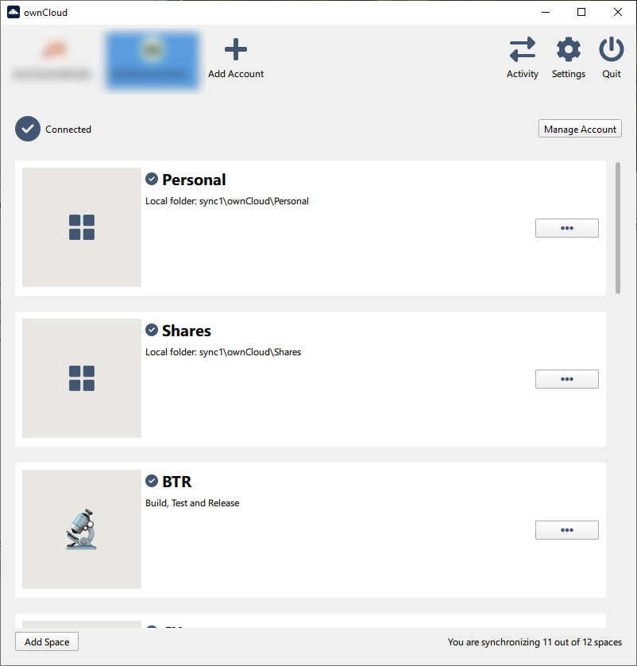
When a new space gets added via the Web UI, it will not be automatically listed here as this window only shows spaces that are already synchronized.
To add a new space for synchronization, click the Add Space button, select the space and define the path if you do not want to take the default base location. Finalize with Add Sync Connection:
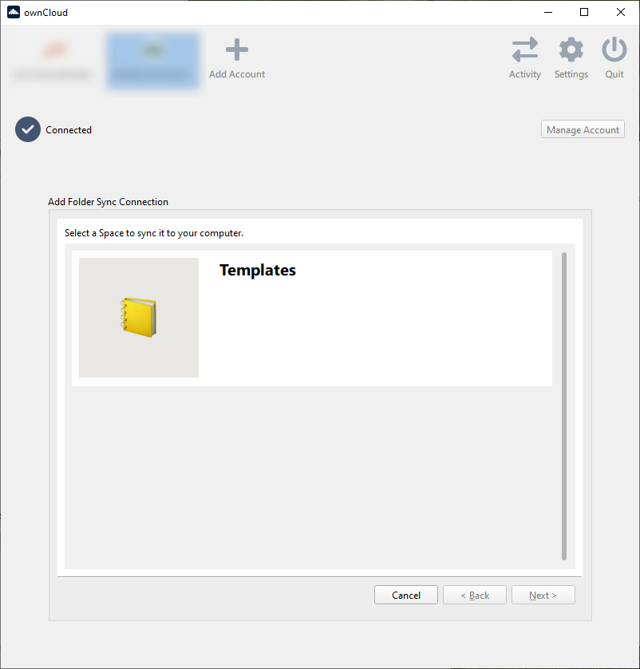
Sharing From Your Desktop
The ownCloud Desktop App integrates with your file manager:
-
Explorer on Windows,
-
Finder on macOS,
-
and Nautilus on Linux.
(Linux users must install theowncloud-client-nautilusplugin.)
You can share with internal ownCloud users and groups and create links to share with external users.
-
If you are not already at the location of the file or folder to share, right-click your systray icon, hover over the account you want to use, and left-click to quickly enter your local ownCloud folder.
-
Go to the file or folder you want to share.

-
Right-click the file or folder you want to share to expose the share dialog which opens the context menu, and click .
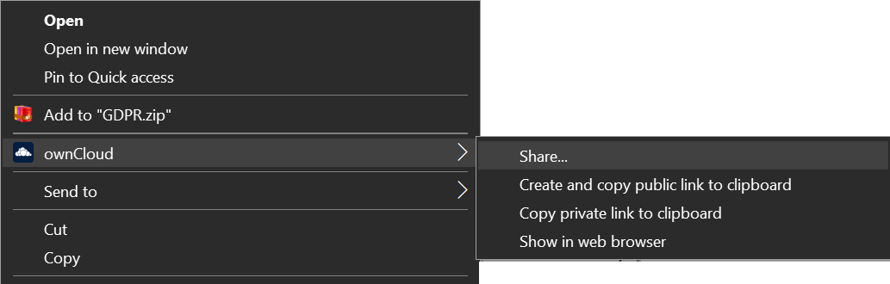
-
Depending on the backend used, different things can happen:
-
ownCloud Infinite Scale
The default browser opens and shows the share dialog of ownCloud Web to take the required settings. If you are not logged in, you will be asked to do so first.
-
Activity Window
The Activity window contains the log of your recent activities, organized in the following tabs:
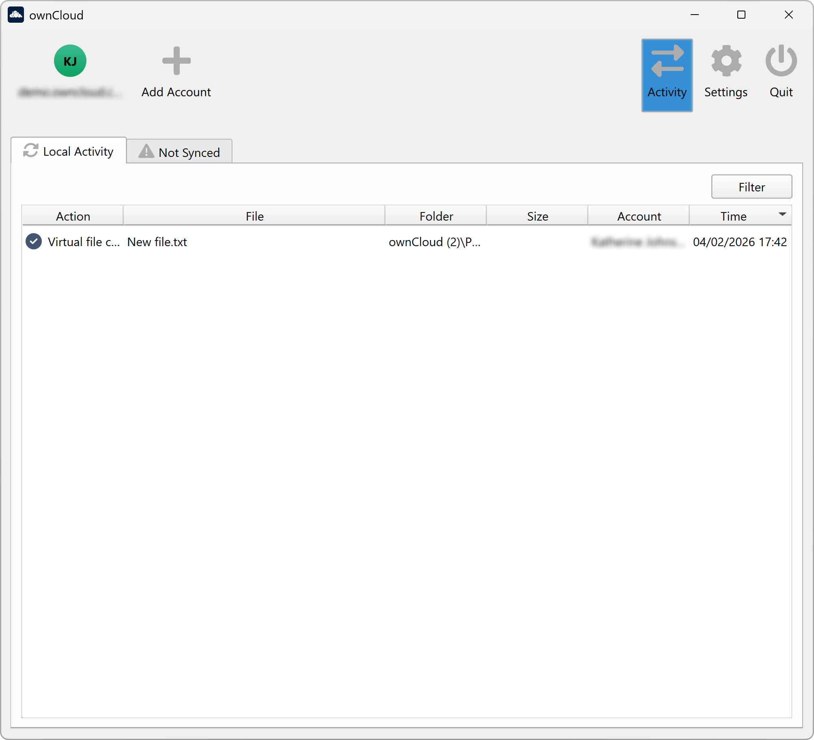
-
Server Activities:
Includes new shares and downloaded and deleted files -
Sync Protocol:
Shows local activity, such as which local folders your files have gone to. -
Not Synced:
Shows errors such as files not synced because they are excluded or any other error status.
In Windows, double-clicking an activity entry pointing to an existing file will open the folder containing the file and highlight it.
On Linux or macOS, you can do the same with
In any of the activity tabs you can mark a single line, multiple lines or all lines with CTRL+a and copy the selected lines to the clipboard with .
Settings Window
The Settings pane contains common settings that are available to all configured accounts. Here you can set network settings, define additional names to exclude from synchronization, and more.
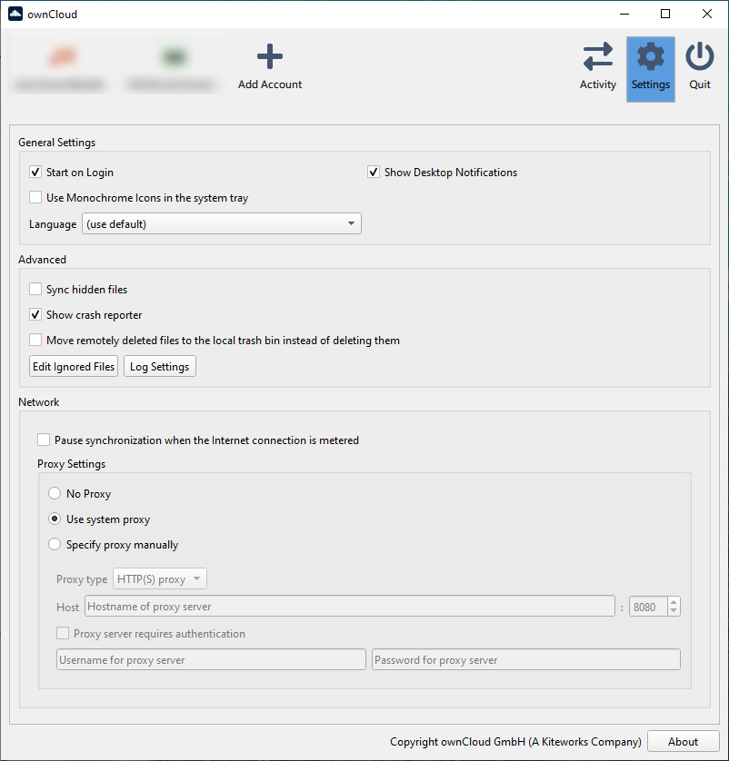
General Settings
-
Launch on System Startup.
-
Show Desktop Notifications.
-
Use Monochrome Icons.
-
Select a non-default language from a menu.
Advanced
-
Sync hidden files
Hidden files are files starting with a dot like .filename.txt, but not files which are hidden by setting a file attribute. -
Show crash reporter.
-
Define where to move remotely deleted files.
-
Buttons for:
-
Edit Ignored Files (see below) and
-
Log settings.
-
Using the Network Window
The Network Settings section allows you to configure various network related settings.
-
Pause synchronization with metered Internet connections.
This can be useful when using a cellular connection and roaming. -
The Proxy settings contain:
-
No proxy
-
Use system proxy
-
Specify proxy manually
-
The Ignored Files Editor
| This section is for advanced users only! |
Using the Ignored Files Editor
You may have some local files or directories that you do not want to backup and store on the server. To identify and exclude these files or directories, you can use the .
|
Note that rules for ignored files are also applied to folders. 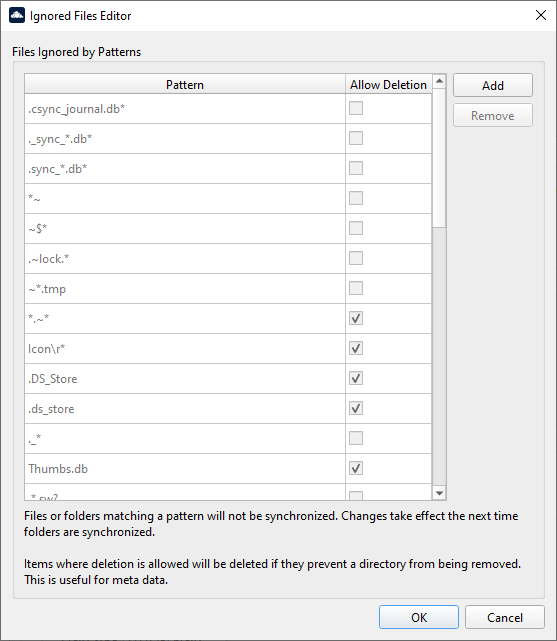 |
For your convenience, the editor is pre-populated with a default list of typical ignore patterns. These patterns are stored in a system file. (typically sync-exclude.lst) located in the ownCloud Desktop App directory. You cannot modify these pre-populated patterns directly from the editor. However, if necessary, you can hover over any pattern in the list to display the path and filename associated with that pattern, locate the file, and edit the sync-exclude.lst file.
| Changing the global exclude definition file can render the client unusable or cause undesirable behavior. |
-
Each line in the editor contains an ignore pattern string. The following rules apply:
-
Each pattern string in the list is by default disabled for
Allow Deletionif not otherwise defined. IfAllow Deletionis enabled, files will be deleted if they prevent a directory from being removed. This is for example useful when files are considered as metadata. When default disabled, you can manually change the behavior after defining the pattern in the . -
If a pattern starts with a closing square bracket
], theAllow Deletioncheckbox is changed to default enabled. Example:]custom_pattern. -
In addition to using normal characters to define an ignore pattern, you can use wildcard characters to match values. Use an asterisk (
*) to match any number of characters, or a question mark (?) to match a single character. Example:]custom?pattern* -
Patterns that end with a slash (
/) are applied only to directory parts of the scanned path. Example:]custom?pattern*/
User-defined entries are not currently checked for syntactical correctness by the editor, so you will not see any warnings about bad syntax. If your synchronization does not work as expected, check your syntax. A restart of the Desktop App is required in order for the changes to take effect. -
-
In addition to excluding files and directories that use patterns defined in this list:
-
The Desktop App always excludes files that contain characters that cannot be synchronized with other file systems.
-
Files that cause individual errors three times during a sync will be removed. However, the client provides the option to retry a synchronization three additional times for files that cause errors.
-
Default Ignored Files
The Desktop App supports the ability to exclude or ignore certain files from the sync process. Some system-wide file patterns that are used to exclude or ignore files are included by default. You can also add your own patterns.
By default, the Desktop App ignores the following files:
-
Files matched by one of the patterns defined in the Ignored Files Editor.
-
Files starting with the following pattern are reserved for journaling:
.sync*.db*,.sync_*.db*,.csync_journal.db*and.owncloudsync.log* -
Files with a name longer than 254 characters.
-
The file
Desktop.iniin the root of a synced folder. -
Files matching the pattern
_conflict-unless conflict file uploading is enabled. -
Files matching the pattern
(conflicted copyunless conflict file uploading is enabled. -
Windows only:
-
Files with a trailing space or dot.
-
See the Filename Considerations page to identify characters not allowed in filenames or filenames that contain reserved names that do not work on typical Windows filesystems.
-
If a pattern selected using a checkbox in the Ignored Files Editor, or if a line in the exclude file starts with the character ] directly followed by the file pattern, files matching the pattern are considered.
- Fleeting meta data
-
These files are ignored and removed by the Desktop App if found in the synchronized folder. This is suitable for meta files created by some applications that have no sustainable meaning.
If a pattern ends with the forward slash (
/) character, only directories are matched. The pattern is only applied for directory components of filenames selected using the checkbox.To match filenames against the exclude patterns, the UNIX standard C library function
fnmatchis used. This process checks the filename against the specified pattern using standard shell wildcard pattern matching. For more information, please refer to the pattern matching documentation.The path that is checked is the relative path under the sync root directory.
- Pattern and File Match Examples
-
Pattern File Matches ~$*~$foo,~$example.docfl?pflip,flapmoo/map/moo/,moo/